Twenty eight companies on one calendar year
These filers close their books in six different months, so their own year labels do not line up. The calendar year column puts them in the same row.
| Company | Fiscal year | revenue, $m | Source tag | Confidence |
|---|
Where one company's numbers came from
Every value with the XBRL tag behind it. Where a filer changed which tag it used, the timeline shows exactly when. That change is the problem this project exists for.
| Fiscal year | Concept | Value, USD | Source tag | Confidence |
|---|
Loading
The bar above says how much needed judgement. It cannot say which. These are the rows, named, with the reason each is flagged, sorted by how much the number moves if the call is wrong.
| Company | Year | Concept | Why it is flagged | Signal |
|---|
Ask it yourself
The same twelve tables the API serves, queried here in your browser. Nothing is sent anywhere.
The Parquet is public, so you can skip this page and point DuckDB at it from anywhere.
select * from 'https://sushantpatil2899.github.io/xbrl-reconcile/mart_financials.parquet' limit 5;
How it is built
Two diagrams, generated from the code rather than drawn by hand. Open either to explore it, where every box cites the file and line it came from.


| Measure | Count | What it is |
|---|